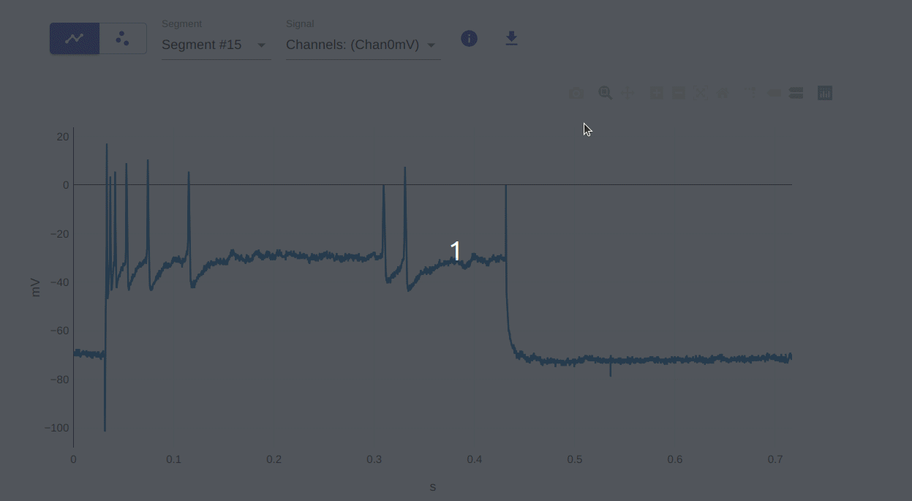
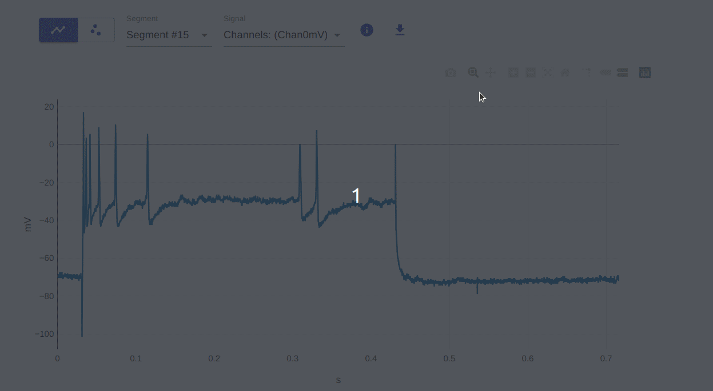
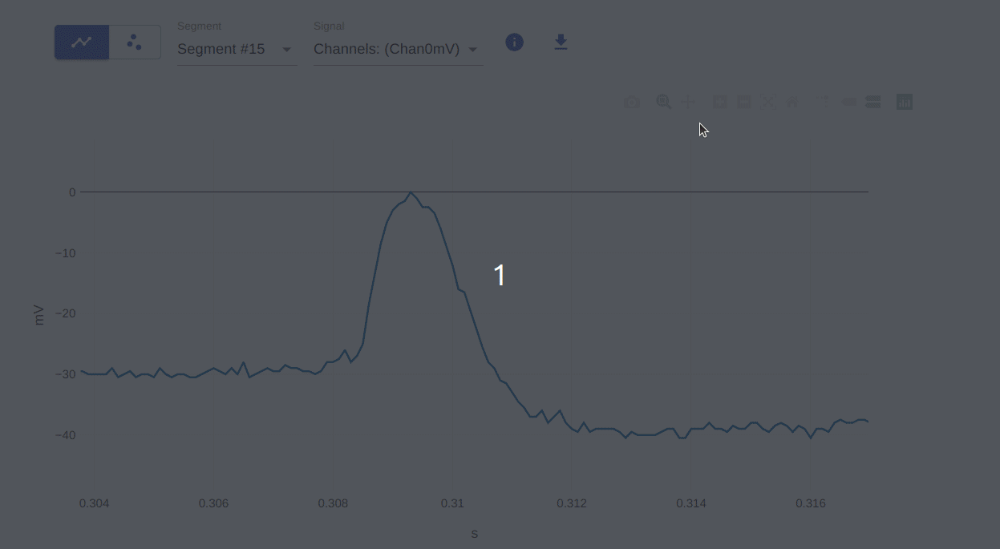
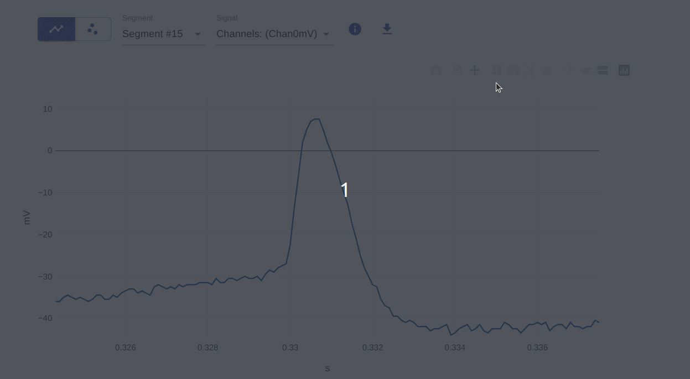
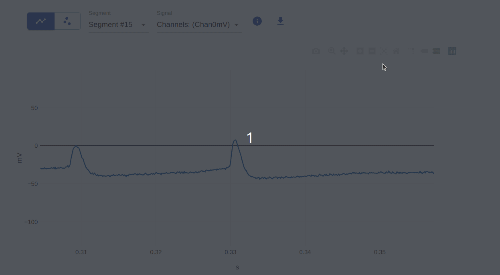
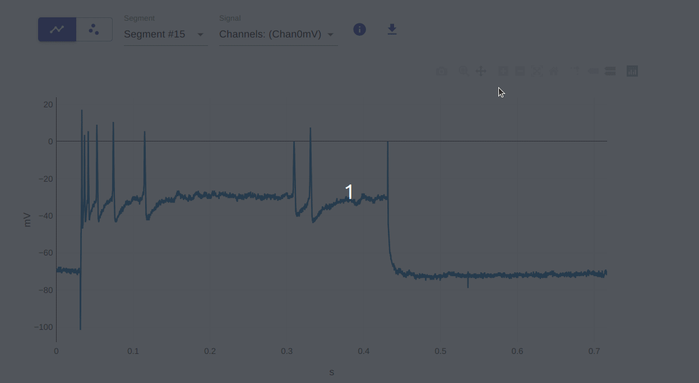
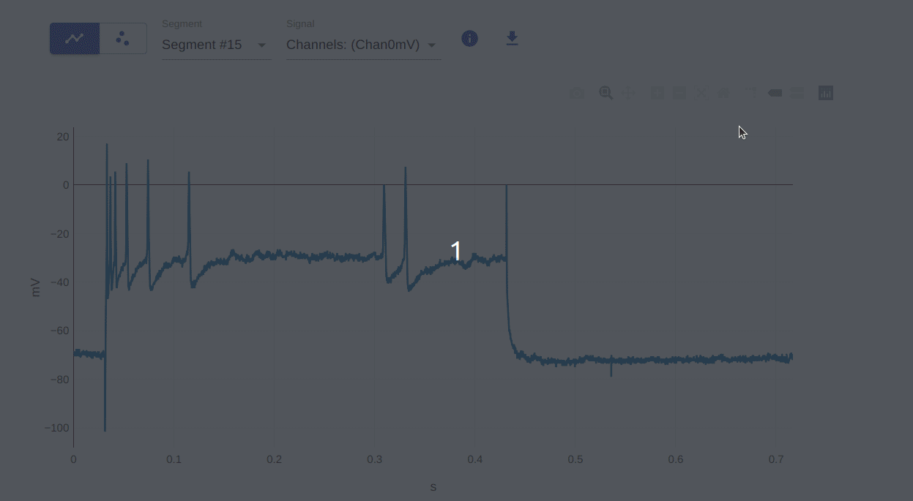

The visualizer offers various interactive features for exploring the data, courtesy of the underlying plotly.js library. These are briefly presented in this guide with examples.
Quick overview of visualizer interactivity features
1: Download plot as a png
This allows you to download the current plot as a png file. This is useful for saving the plot for later use or for sharing it with others.

2: Zoom (select region of interest)
This allows you to zoom in on a specific region of the plot. You can do this by clicking and dragging the mouse over the region of interest. To reset the plot to its original view, double-click on the plot.

3: Pan
This allows you to pan the plot in any direction. You can do this by clicking and dragging the mouse over the plot. To reset the plot to its original view, double-click on the plot.

4, 5: Zoom in / Zoom out
This allows you to zoom in or out on the plot. You can do this by using the mouse scroll wheel. To reset the plot to its original view, double-click on the plot.

6: Autoscale
This allows you to autoscale the plot. This is useful for resetting the plot to its original view after zooming or panning.

7: Reset axes
This allows you to reset the axes of the plot. Similar to autoscale seen above, this is useful for resetting the plot to its original view after zooming or panning. The difference between this and autoscale is that autoscale resets the entire plot, while reset axes only resets the axes.

8: Toggle Spike Lines
This allows you to toggle spike lines on and off. This is useful for visualizing the data in a different way. Spike lines refer to the vertical and horizontal lines that appear when you hover over a data point.

9, 10: Show closest data on hover / Compare data on hover
This allows you to show the closest data point on hover and compare data points on hover. This is useful for visualizing the data values in a different way. You can do this by hovering over the data points on the plot. The compare feature is useful when you have multiple traces on the plot.

This project has received funding from the European Union’s Horizon 2020 Framework Programme for Research and Innovation under the Specific Grant Agreements No. 785907 and No. 945539 (Human Brain Project SGA2 and SGA3).
If you encounter any problems, please let us know.